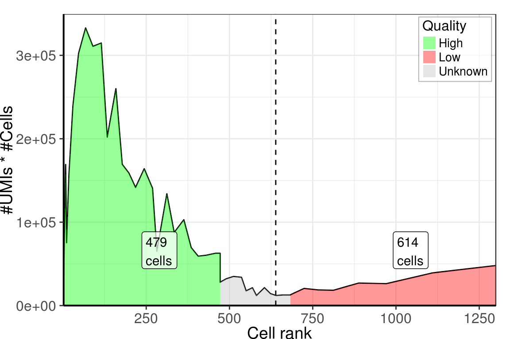
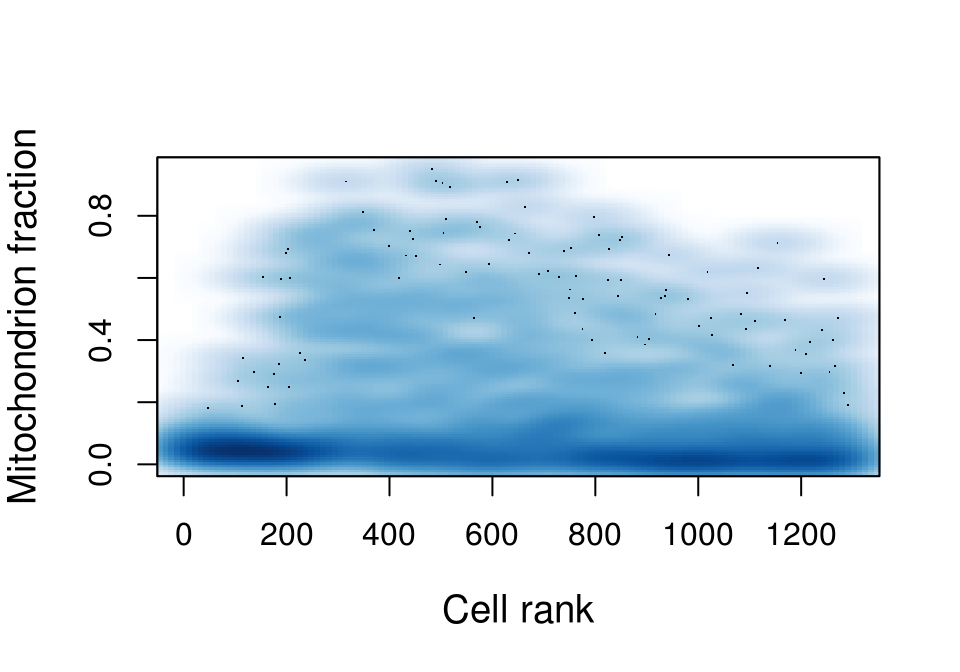
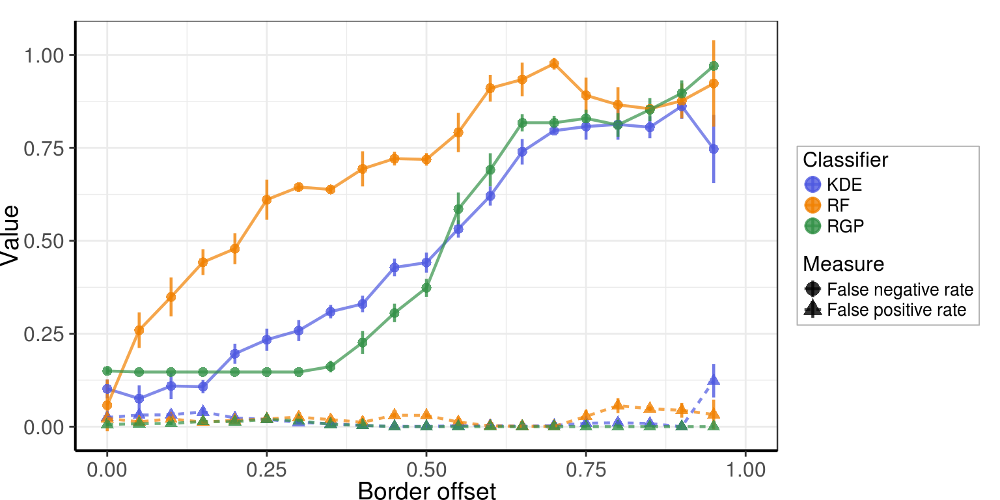
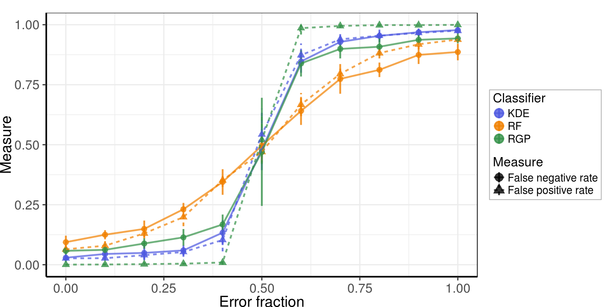
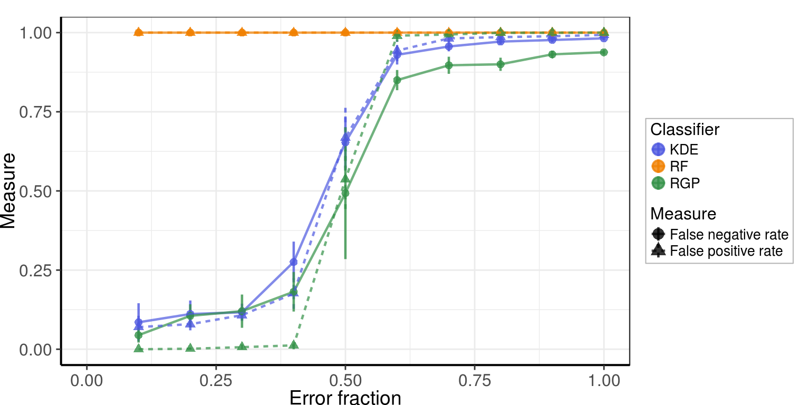
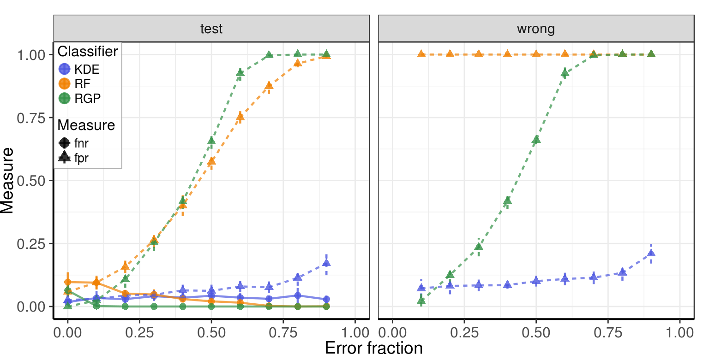
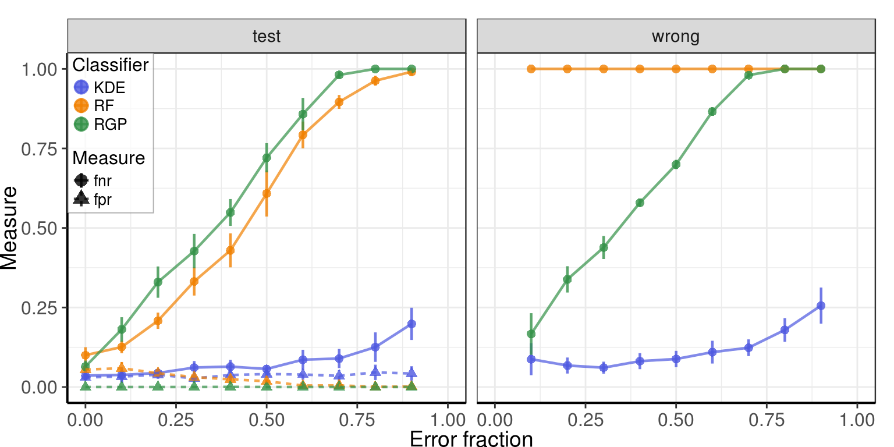
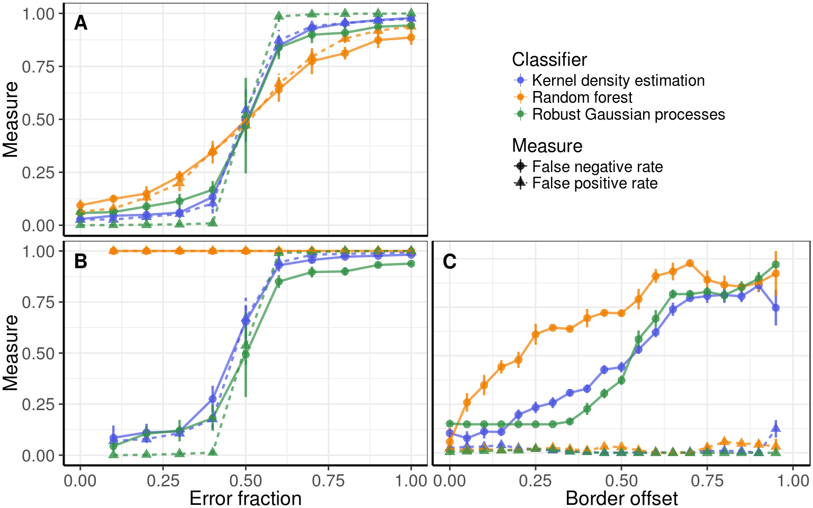

Source file: notebooks/low_quality_cells/label_noise_robustness.Rmd
Last updated: 2018-02-02
Code version: b8b2fd2
library(ggplot2)
library(ggrastr)
library(parallel)
library(dplyr)
library(dropestr)
library(dropEstAnalysis)
library(reshape2)
library(randomForest)
library(ggpubr)
library(cowplot)
theme_set(theme_base)
RgpPredict <- function(clf, x) {
predictions <- predictORMCGP(clf, x)$prob[,2]
names(predictions) <- rownames(x)
return(predictions)
}
classifier_funcs <- list(
KDE=list(train=TrainKDE, predict=function(clf, y) PredictKDE(clf, y)[, 2]),
RF=list(train=function(x, y) randomForest(x=x, y=as.factor(y), ntree=1000, mtry=2),
predict=function(clf, x) predict(clf, x, type='prob')[,2]),
RGP=list(train=function(x, y) epORGPC(x, as.factor(y), kernel='gaussian'),
predict=RgpPredict))kPlotDir <- '../../output/figures/'
holder <- readRDS('../../data/dropest/allon_new/SRR3879617/est_11_22/cell.counts.rds')
holder$reads_per_umi_per_cell <- NULLNumber of cells:
analised_cbs <- names(sort(holder$aligned_umis_per_cell, decreasing=T)[1:1300])
umi_counts <- holder$aligned_umis_per_cell[analised_cbs]
features <- PrepareLqCellsDataPipeline(holder, mit.chromosome.name="chrM")[analised_cbs,]
classifier_data <- GetOptimalPcs(features)$pca.data
cell_number <- EstimateCellsNumber(umi_counts)
real_cbs <- analised_cbs[1:cell_number$min]
background_cbs <- analised_cbs[cell_number$max:length(analised_cbs)]
scores_base <- mclapply(classifier_funcs, ScoringFunction, classifier_data,
real_cbs, background_cbs, mc.cores=3)
PlotCellsNumberLine(umi_counts, estimate.cells.number=T, breaks=50) +
theme_pdf()
Miochondrial fraction:
smoothScatter(features$MitochondrionFraction, xlab='Cell rank',
ylab='Mitochondrion fraction', cex.lab=1.2)
Simple cross-validation on labeled data. While, labels have errors, it can give us an estimate of the algorithms’ quality.
kfold_labeled_res <- lapply(classifier_funcs, function(clf)
KFoldCV(classifier_data[c(real_cbs, background_cbs),],
c(rep(1, length(real_cbs)), rep(0, length(background_cbs))),
clf$train, clf$predict, k=5, stratify=F,
measure = c('sensitivity', 'specifisity')))
CvResultsTable(kfold_labeled_res)| Classifier | sensitivity | specifisity |
|---|---|---|
| KDE | 90 (±4) | 90.7 (±1.2) |
| RF | 89.1 (±3.8) | 91.9 (±1) |
| RGP | 87.7 (±2.3) | 95.1 (±1.9) |
Let’s check robustness to data subsetting. Now we will remove 20% of train data, but check unswers on the same dataset (with “Unknown” quality). Here, “correct” answer is the answer, obtained after training on the whole dataset.
train_cbs <- c(real_cbs, background_cbs)
intermediate_cbs <- setdiff(analised_cbs, train_cbs)
intermediate_res <- mapply(function(scores, clf)
KFoldCV(classifier_data[train_cbs,], scores[train_cbs], clf$train, clf$predict,
k = 5, stratify = F, test.force = list(x=classifier_data[intermediate_cbs,],
y=scores[intermediate_cbs]),
measure = c('sensitivity', 'specifisity')),
scores_base, classifier_funcs, SIMPLIFY=F) %>%
setNames(names(classifier_funcs))
CvResultsTable(intermediate_res)| Classifier | sensitivity | specifisity |
|---|---|---|
| KDE | 90.2 (±4.1) | 96.3 (±0.6) |
| RF | 89.8 (±6.1) | 96.5 (±1.9) |
| RGP | 83.5 (±2.6) | 99.3 (±0.6) |
Again, we will check stability on “Unknown” cells. But now, we will widen borders of real / background cells. To estimate confidence intervals we randomly removes 10% of data (as in 10-fold CV).
offset_vals <- seq(0.0, 0.95, 0.05)
offset_accs <- mclapply(names(classifier_funcs), function(n)
mclapply(offset_vals, function(offset)
ScoreDependsOnBorders(classifier_data, scores_base[[n]], classifier_funcs[[n]],
real_cbs, background_cbs, offset, offset), mc.cores=20), mc.cores=2)
names(offset_accs) <- names(classifier_funcs)plot_df <- lapply(offset_accs, function(df) lapply(1:length(offset_vals), function(i)
cbind(df[[i]], Measure=rownames(df[[i]]), Offset=offset_vals[i])) %>% bind_rows()) %>%
bind_rows(.id="Classifier") %>% mutate(mean=1-mean)
plot_df$Measure <- c('False negative rate', 'False positive rate')[as.integer(plot_df$Measure)]
gg_borders <- ggplot(plot_df, aes(x=Offset, ymin=mean-sd, ymax=mean+sd,
y=mean, color=Classifier, shape=Measure)) +
geom_pointrange(fatten=2.5, alpha=0.8, size=0.8) +
geom_line(aes(linetype=Measure), size=0.8, alpha=0.7) +
xlim(0, 1) +
scale_color_manual(values = c("#4E58E0", "#F08000", "#349147")) +
labs(x='Border offset', y='Value') +
theme_pdf()
gg_borders
Let’s assume that classifier answers are real class labels. We will introduce some noise to them and retrain the classifiers on the noisy labels. Here, 75% of the dataset are used to train classifiers, and 25% are used to test them.
wrong_frac_vals <- seq(0.0, 1.0, 0.1)
var_types <- c('fpr', 'fnr')
wrong_labels_vars <- list(wrong=paste0('wrong.', var_types), all=paste0('all.', var_types), test=paste0('test.', var_types))
scores_with_err <- mcmapply(function(clf, scores)
mclapply(wrong_frac_vals, function(frac) mclapply(1:10, function(y)
ScoreCellsWithWrongLabels(classifier_data, scores, clf, frac, frac, 0.25), mc.cores=2), mc.cores=10),
classifier_funcs, scores_base, SIMPLIFY=F, mc.cores=2)
names(scores_with_err) <- names(classifier_funcs)Results on the test subset (25% of data):
measure_names <- c(fpr='False positive rate', fnr='False negative rate')
gg_offset_test <- scores_with_err %>%
PlotTestedClassifierErrors(wrong_frac_vals, wrong_labels_vars, var_types,
filt.subset='test', measure.names=measure_names) +
theme_pdf()
gg_offset_test
Results on cells with changed labels:
gg_offset_wrong <- scores_with_err %>%
PlotTestedClassifierErrors(wrong_frac_vals, wrong_labels_vars, var_types,
filt.subset='wrong', measure.names=measure_names) +
theme_pdf()
gg_offset_wrong
Errors in real CBs only:
wrong_frac_vals_one_side <- wrong_frac_vals[1:(length(wrong_frac_vals) - 1)]
scores_with_err_real <- mcmapply(function(clf, scores)
mclapply(wrong_frac_vals, function(frac) mclapply(1:10, function(y)
ScoreCellsWithWrongLabels(classifier_data, scores, clf, frac, 0.0, 0.25), mc.cores=2),
mc.cores=10),
classifier_funcs, scores_base, SIMPLIFY=F, mc.cores=2)
PlotTestedClassifierErrors(scores_with_err_real, wrong_frac_vals_one_side,
wrong_labels_vars, var_types) +
theme_pdf(legend.pos=c(0, 1))
Errors in background CBs only:
scores_with_err_background <- mcmapply(function(clf, scores)
mclapply(wrong_frac_vals, function(frac) mclapply(1:10, function(y)
ScoreCellsWithWrongLabels(classifier_data, scores, clf, 0.0, frac, 0.25), mc.cores=2),
mc.cores=10),
classifier_funcs, scores_base, SIMPLIFY=F, mc.cores=2)
PlotTestedClassifierErrors(scores_with_err_background, wrong_frac_vals_one_side,
wrong_labels_vars, var_types) +
theme_pdf(legend.pos=c(0, 1))
plotlist <- list(gg_offset_test, gg_offset_wrong, gg_borders) %>%
lapply(function(gg) gg + rremove("legend")) %>%
lapply(`+`, theme(plot.margin=ggplot2::margin()))
legend <- get_legend(
gg_borders +
scale_color_manual(values = c("#4E58E0", "#F08000", "#349147"),
labels=c("Kernel density estimation", "Random forest",
"Robust Gaussian processes")) +
guides(color=guide_legend(override.aes=list(size=0.25)),
shape=guide_legend(override.aes=list(size=0.5))) +
theme(legend.box.background=element_blank(),
legend.text=element_text(size=11),
legend.title=element_text(size=13)))
plotlist[[1]] <- plotlist[[1]] + rremove("x.text") + rremove("x.ticks") + rremove("xlab")
plotlist[[3]] <- plotlist[[3]] + rremove("y.text") + rremove("y.ticks") + rremove("ylab")
gg_figure <- plot_grid(plotlist[[1]], legend, plotlist[[2]], plotlist[[3]], ncol=2,
rel_widths=c(1, 0.9), rel_heights=c(0.9, 1),
labels=c('A', '', 'B', 'C'), label_y=0.98,
label_x=c(0.15, 0.0, 0.15, 0.02)) +
theme(plot.margin=ggplot2::margin(2, 2, 2, 2))
ggsave(paste0(kPlotDir, 'supp_label_noise_robustness.pdf'),
gg_figure, width=8, height=6)
gg_figure
| value | |
|---|---|
| version | R version 3.4.1 (2017-06-30) |
| os | Ubuntu 14.04.5 LTS |
| system | x86_64, linux-gnu |
| ui | X11 |
| language | (EN) |
| collate | en_US.UTF-8 |
| tz | America/New_York |
| date | 2018-02-02 |
| package | loadedversion | date | source | |
|---|---|---|---|---|
| 1 | assertthat | 0.2.0 | 2017-04-11 | CRAN (R 3.4.1) |
| 2 | backports | 1.1.2 | 2017-12-13 | cran (@1.1.2) |
| 4 | bindr | 0.1 | 2016-11-13 | CRAN (R 3.4.1) |
| 5 | bindrcpp | 0.2 | 2017-06-17 | CRAN (R 3.4.1) |
| 6 | clisymbols | 1.2.0 | 2017-05-21 | cran (@1.2.0) |
| 7 | colorspace | 1.2-6 | 2015-03-11 | CRAN (R 3.3.1) |
| 9 | cowplot | 0.8.0 | 2017-07-30 | CRAN (R 3.4.1) |
| 11 | digest | 0.6.15 | 2018-01-28 | cran (@0.6.15) |
| 12 | dplyr | 0.7.4 | 2017-09-28 | cran (@0.7.4) |
| 13 | dropEstAnalysis | 0.6.0 | 2018-02-02 | local (VPetukhov/dropEstAnalysis@NA) |
| 14 | dropestr | 0.7.5 | 2018-02-01 | local (@0.7.5) |
| 15 | evaluate | 0.10.1 | 2017-06-24 | cran (@0.10.1) |
| 16 | ggplot2 | 2.2.1 | 2016-12-30 | cran (@2.2.1) |
| 17 | ggpubr | 0.1.4 | 2017-06-28 | CRAN (R 3.4.1) |
| 18 | ggrastr | 0.1.5 | 2018-01-29 | Github (VPetukhov/ggrastr@cc56b45) |
| 19 | git2r | 0.21.0 | 2018-01-04 | cran (@0.21.0) |
| 20 | glue | 1.2.0 | 2017-10-29 | cran (@1.2.0) |
| 24 | gtable | 0.2.0 | 2016-02-26 | CRAN (R 3.3.1) |
| 25 | highr | 0.6 | 2016-05-09 | CRAN (R 3.3.1) |
| 26 | htmltools | 0.3.6 | 2017-04-28 | cran (@0.3.6) |
| 27 | KernSmooth | 2.23-15 | 2015-06-29 | CRAN (R 3.4.0) |
| 28 | knitr | 1.19 | 2018-01-29 | cran (@1.19) |
| 29 | ks | 1.11.0 | 2018-01-16 | cran (@1.11.0) |
| 30 | labeling | 0.3 | 2014-08-23 | CRAN (R 3.3.1) |
| 31 | lattice | 0.20-35 | 2017-03-25 | CRAN (R 3.3.3) |
| 32 | lazyeval | 0.2.0 | 2016-06-12 | cran (@0.2.0) |
| 33 | magrittr | 1.5 | 2014-11-22 | CRAN (R 3.3.1) |
| 34 | Matrix | 1.2-10 | 2017-04-28 | CRAN (R 3.4.0) |
| 35 | mclust | 5.4 | 2017-11-22 | cran (@5.4) |
| 37 | munsell | 0.4.3 | 2016-02-13 | CRAN (R 3.3.1) |
| 38 | mvtnorm | 1.0-7 | 2018-01-26 | cran (@1.0-7) |
| 40 | pcaPP | 1.9-73 | 2018-01-14 | CRAN (R 3.4.1) |
| 41 | pillar | 1.1.0 | 2018-01-14 | cran (@1.1.0) |
| 42 | pkgconfig | 2.0.1 | 2017-03-21 | cran (@2.0.1) |
| 43 | plyr | 1.8.4 | 2016-06-08 | CRAN (R 3.3.1) |
| 44 | R6 | 2.2.2 | 2017-06-17 | cran (@2.2.2) |
| 45 | randomForest | 4.6-12 | 2015-10-07 | CRAN (R 3.4.1) |
| 46 | Rcpp | 0.12.15 | 2018-01-20 | cran (@0.12.15) |
| 47 | reshape2 | 1.4.2 | 2016-10-22 | cran (@1.4.2) |
| 48 | rlang | 0.1.6 | 2017-12-21 | cran (@0.1.6) |
| 49 | rmarkdown | 1.8 | 2017-11-17 | cran (@1.8) |
| 50 | rprojroot | 1.3-2 | 2018-01-03 | cran (@1.3-2) |
| 51 | scales | 0.4.1 | 2016-11-09 | cran (@0.4.1) |
| 52 | sessioninfo | 1.0.0 | 2017-06-21 | cran (@1.0.0) |
| 54 | stringi | 1.1.1 | 2016-05-27 | CRAN (R 3.3.1) |
| 55 | stringr | 1.2.0 | 2017-02-18 | CRAN (R 3.4.1) |
| 56 | tibble | 1.4.2 | 2018-01-22 | cran (@1.4.2) |
| 59 | withr | 2.1.1 | 2017-12-19 | cran (@2.1.1) |
| 60 | yaml | 2.1.16 | 2017-12-12 | cran (@2.1.16) |
This R Markdown site was created with workflowr